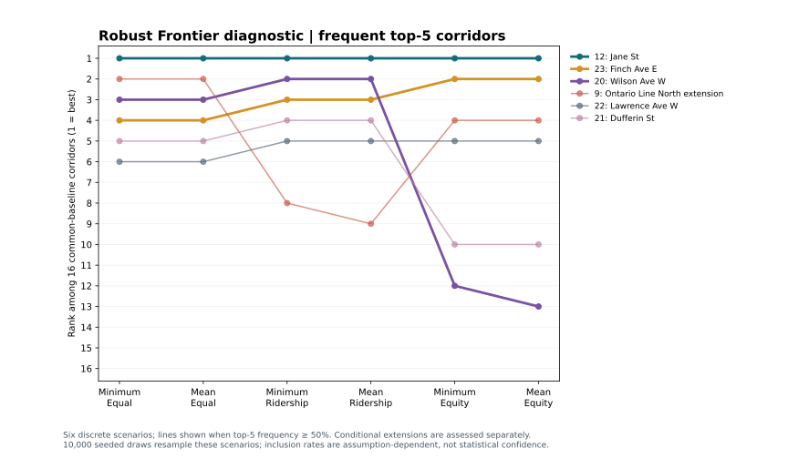
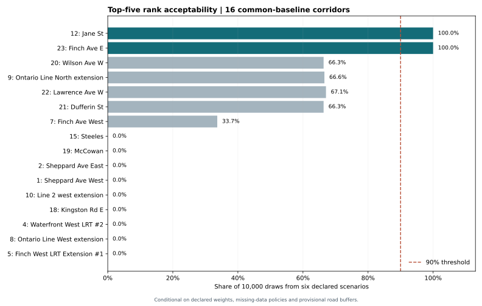

16 common-baseline main candidates · 8 conditional reserve bundles · 10,000 seeded draws
model_ready=true · limitations_flagged=true · unrestricted_model_ready=false
Main shortlist: 12 Jane St, 23 Finch Ave E, 20 Wilson Ave W. Only 12 and 23 exceed 90% top-five inclusion (100% each). Corridor 20: 66.34%. Six discrete scenarios are sampled; frequencies are assumption-dependent, not statistical confidence.
Jane source construction-length assignments remain inconsistent with proxy subsection lengths. Source ridership is length-scaled. A stable rank does not establish source correctness. Woodbine local stress is completed, but its coordinate and future alignment remain approximate.
Full report · Validation · Review draft slides · All draws


| ID | Corridor | Top-five frequency | Rank range | Above 90% |
|---|---|---|---|---|
| 12 | Jane St | 100.00% | 1–1 | True |
| 23 | Finch Ave E | 100.00% | 2–4 | True |
| 20 | Wilson Ave W | 66.34% | 2–13 | False |
| 9 | Ontario Line North extension | 66.59% | 2–9 | False |
| 22 | Lawrence Ave W | 67.07% | 5–6 | False |
| 21 | Dufferin St | 66.34% | 4–10 | False |
| 7 | Finch Ave West | 33.66% | 3–11 | False |
| 15 | Steeles | 0.00% | 6–7 | False |
| 19 | McCowan | 0.00% | 7–9 | False |
| 2 | Sheppard Ave East | 0.00% | 8–11 | False |
| 1 | Sheppard Ave West | 0.00% | 6–12 | False |
| 10 | Line 2 west extension | 0.00% | 7–16 | False |
| 18 | Kingston Rd E | 0.00% | 11–16 | False |
| 4 | Waterfront West LRT #2 | 0.00% | 11–16 | False |
| 8 | Ontario Line West extension | 0.00% | 13–16 | False |
| 5 | Finch West LRT Extension #1 | 0.00% | 14–16 | False |
Conditional-baseline corridors do not enter an unanchored absolute ranking. Prerequisite union catchments and additional covered residents are evaluated separately. These are population coverage estimates, not causal transport benefits.
| Extension | Required sequence | Additional residents | Additional low-income residents |
|---|---|---|---|
| 3 | 4 -> 3 | 26,772 | 3,467 |
| 6 | 5 -> 6 | 1,020 | 108 |
| 11 | 12 -> 11 | 22,722 | 2,525 |
| 13 | 12 -> 11 -> 13 | 7,675 | 745 |
| 14 | 15 -> 14 | 11,183 | 1,173 |
| 16 | 15 -> 16 | 22,261 | 2,919 |
| 17 | 15 -> 16 -> 17 | 22,549 | 2,651 |
| 24 | 23 -> 24 | 36,917 | 4,423 |
34 tests pass. The review deck includes an AI-use disclosure and is not a cleared competition submission.